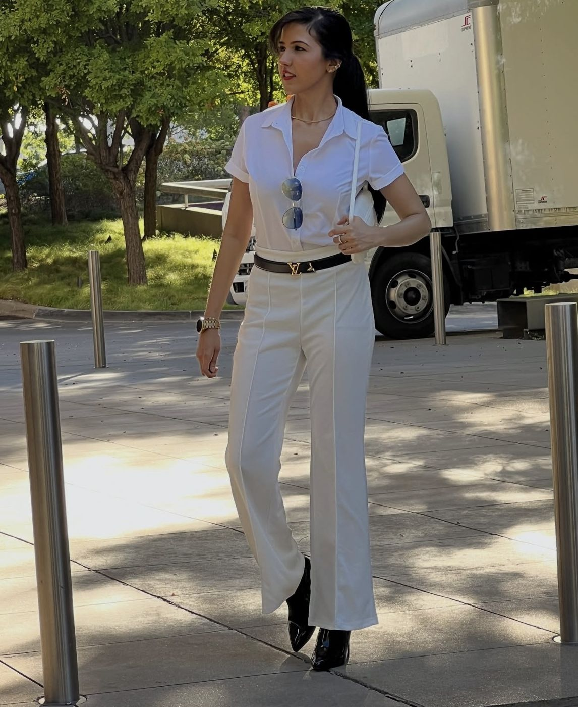

I'm a Data and AI Manager and a senior leader in program management, with more than ten years of experience and a Master's in Engineering. I lead cross-functional teams of data scientists, analysts, data specialists and designers, set technical direction, and turn AI and analytics into measurable business value.
I currently lead six direct reports, and I've managed teams of 35+ across projects. My focus is a collaborative, high-performance environment where people grow and the work lands on time and on budget.
Comfort zones are where skills stop growing.
My range is wide because I say yes to things I haven't done yet, then learn what I need, every day. Strategy, program delivery, data, AI, measurement and media: I've done the work, and I've led the people doing it. Outside my role, I take part in hackathons, office hours, intern mentoring and women-in-tech initiatives.
Clear direction, honest feedback, and room for people to do their best work.
Helping people step up to senior roles, switch careers, or move from non-technical into technical work.
Stepping outside the comfort zone, working through imposter syndrome, and trusting your own judgment.